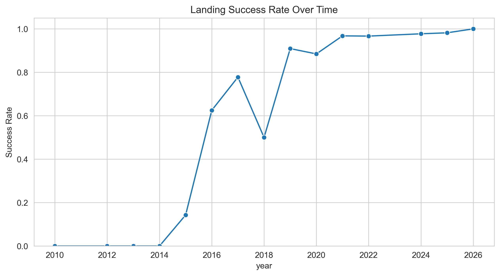
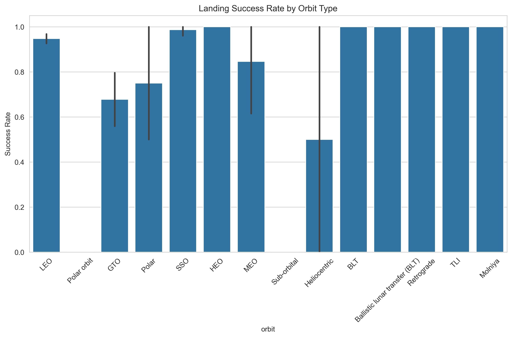
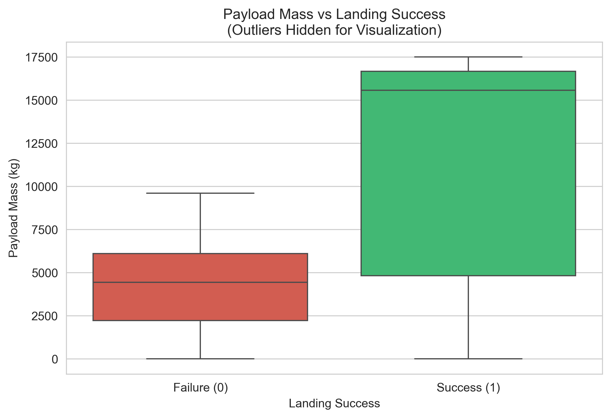
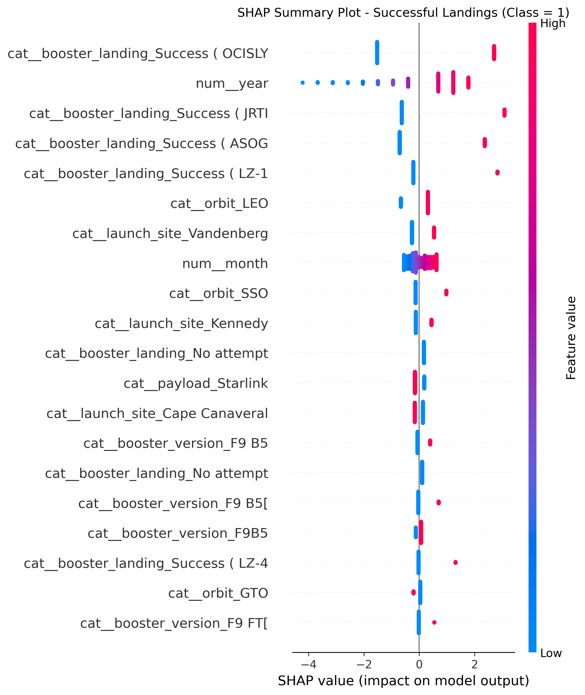

SpaceX Falcon 9
Landing Success Prediction
Predicting first-stage landing success for reusable
rocket cost optimization — full supervised workflow.

Overview
Reusable launch vehicles have transformed the economics of orbital access. This case study applies a complete supervised data mining pipeline to predict binary booster landing success for Falcon 9 missions using historically observed launch characteristics.
A web-scraped catalog of 557 Falcon 9 launches (2010–2026) was cleaned, engineered, and explored. The target variable landing_success is strongly imbalanced (~91.2% successful landings). Three classifiers — logistic regression, random forest, and XGBoost — were trained in scikit-learn pipelines with stratified cross-validation, class-imbalance handling, and hyperparameter search.
Key results
- XGBoost achieved the highest cross-validated F1 score (0.971) and hold-out F1 of 0.971, with overall test accuracy of 95%.
- Failure-class recall remained limited (0.40 on the test set), highlighting the difficulty of rare-event prediction.
- SHAP interpretability identified mission year, landing pad / recovery mode, orbit type, and launch site as influential drivers of predicted landing probability.

Methodology
- Data acquisition — web scraping and catalog assembly of Falcon 9 launches
- Preprocessing — cleaning, feature engineering, leakage-aware target definition
- EDA — temporal learning curves, orbit/site success rates, payload associations
- Modeling — logistic regression, random forest, XGBoost with CV and tuning
- Interpretability — SHAP summaries and dependence plots


Repository structure
SpaceX Project/
├── Data/ # raw & processed launch catalogs
├── Notebooks/ # 01 acquisition → 04 interpretability
├── Figures/ # EDA and SHAP plots
├── Models/ # trained pipelines
└── Report # final project write-up